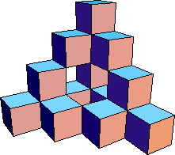
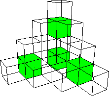

|  |  | |
| The second level of the construction consists of 16 cubes, each of
side length |
| Each cube has 6 faces, each of area |
| The second level consists of four scaled copies of the first level, each with six interior faces. |
| In addition, the joining of these copies forms six interior faces. |
| So the area is |
| A2 = 4*(4*6*(1/4)2 - 6*(1/4)2) - 6*(1/4)2 |
| = 6 - (6/42)*(1 + 4) |